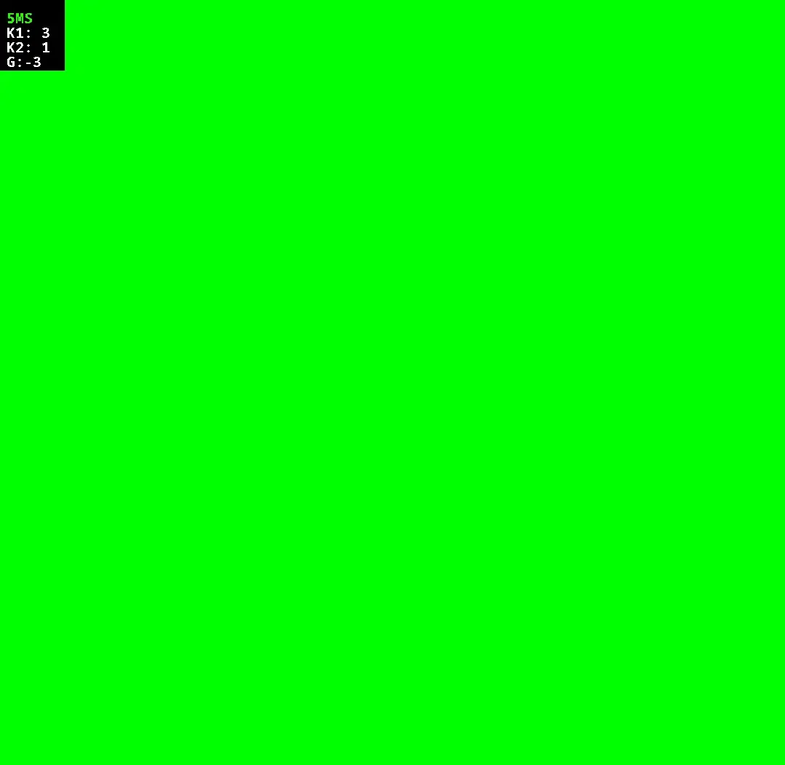
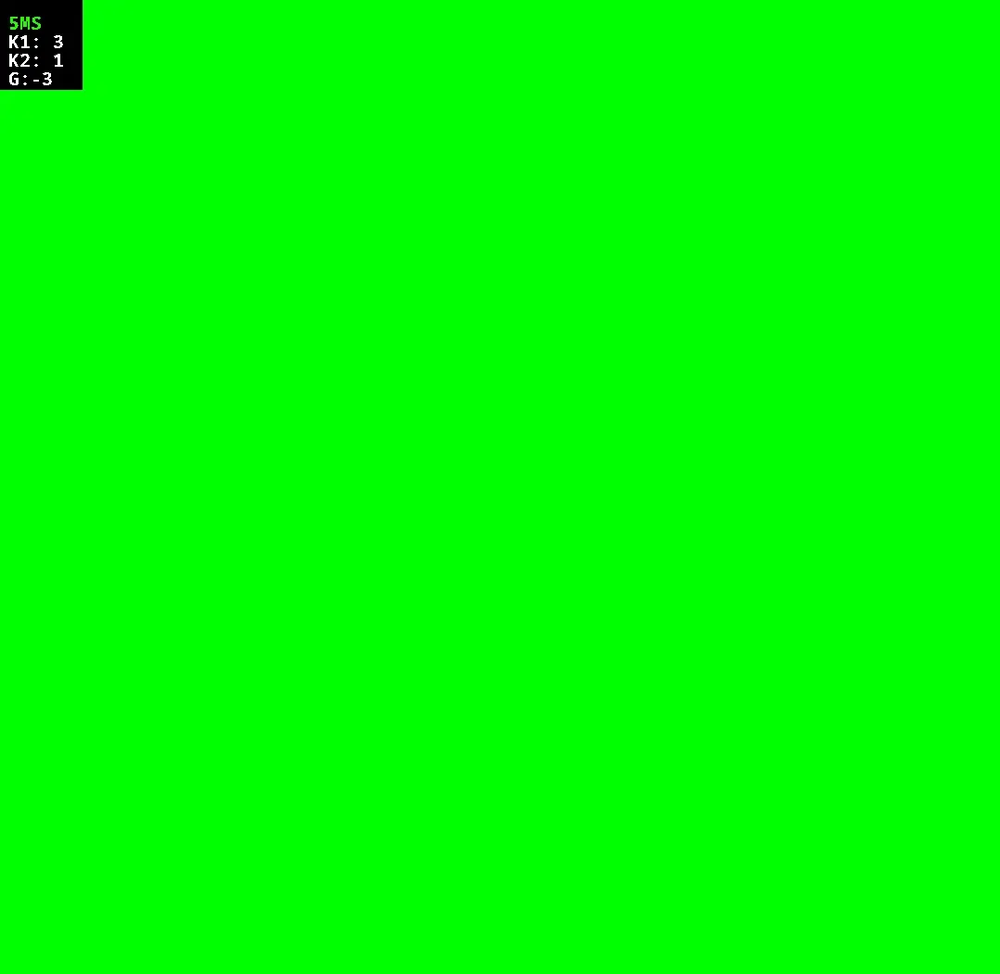

Belousov–Zhabotinsky Reaction Simulation
A cellular automata simulation written in Java ☕
About
This was a project for AP Computer Science A. For my final project, I wrote a simulation of the Belousov Reaction. It was written in Java using AWT and Swing.
What I learned
This project taught me how fun modeling chemical oscillations and reactions are. It was a fun deep dive into both programming and theoretical concepts, blending chemistry and computer science.
More info
I used this white paper to get the
equations to calculate the state of the cells.
The cells' state is set according to the following rules:
The cells' state is > 1 and < N where N is any integer.
The new state is dependant on A, B, and S which are defined as
A = The number of ill cells
B = The number of ill cells in it's neighborhood
S = The sum of neighboring cells' states plus the current cells' state
If the cell is healthy (its state is 0), its new state is calculated as
[A/k1] + [B/k2]
Where k1 and k2 are constants
If the cell infected (its state is inbetween)
Its new state will be calculated as
[S/A]+g
If the cell is sick (its state is = N)
Here are some of my favorite outputs of this project.


 
